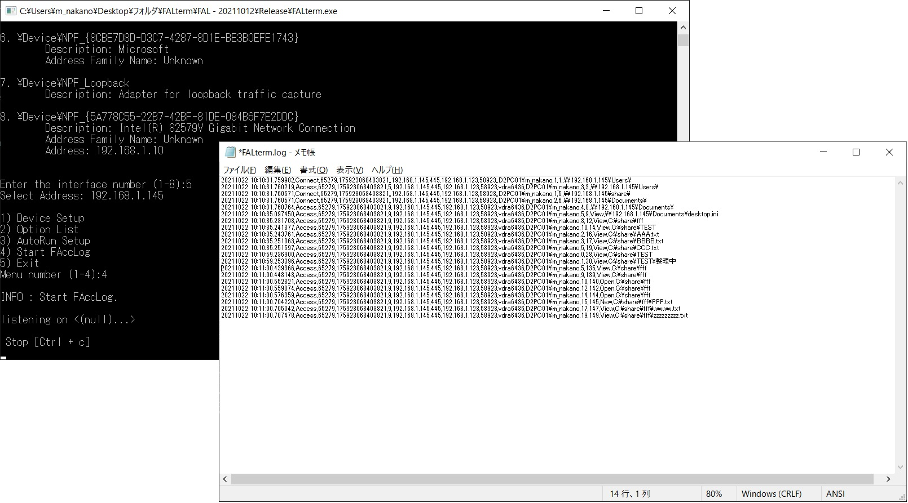
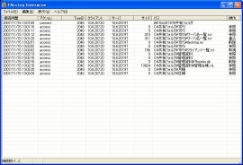

製品詳細SOFTWARE
FALterm
今、お使いのファイルサーバは「いつ」「誰が」「どこに」「何をしたか」を把握していますか？
そんな心配を感じているあなたに、ファイルサーバのアクセス監視ならこれ！
2023/07/26
FALterm 新製品リリース
FALterm は、FAccLog Ultimateをベースに最新のWindowsに対応するため新しいロジックに変えさらに安定性化しました。
FALterm は、プライバシーマーク、個人情報保護法などの情報漏洩対策を目的とし、公開している共有フォルダのアクセスを監視したいお客様向けの製品です。
セキュリティ監査項目に必須とされるアクセスログの管理をサポートします。
FALterm を導入することで、ファイルサーバにアクセスしてきたユーザの履歴が収集でき、収集したアクセスログは、監査用としての情報源として利用することが可能です。
FALterm は、パケットキャプチャ型のアクセス監視を行い、お使いのサーバにインストールするだけなので、 クライアントPCへの煩わしいインストール作業や各PCへの設定作業はいりません。
また、パケットキャプチャ型のアクセス監視なため、サーバへの負荷も低く抑えられていますのでサーバへの負担は低く、 アクセス情報はログとして収集可能ですので、市販のログ監視などに容易に組み合わせることも可能です。
アクセス監視としては、シンプルに作成したことにより、細かく運用に取り入れられるようにしています。
FALterm 2023年7月26日リリース
※ライセンスキーを入力しない場合でも「１ヵ月」フル機能で使用ができます。 ※FAccLog Ultimateライセンスキーで「６ヵ月」フル機能で使用ができます。 今、お使いのファイルサーバは「いつ」「誰が」「どこに」「何をしたか」を把握していますか？ ※ライセンスキーを入力しない場合でも「１ヵ月」フル機能で試供ができます。 セッション情報、コネクション情報、リストビュー表示の管理情報数を変更し大規模の環境に合わせチューニングが可能となります。 ■旧製品、旧バージョンのダウンロードサイトはこちら
FAccLog Ultimate
そんな心配を感じているあなたに、ファイルサーバのアクセス監視ならこれ！
2023/01/06 UP!
FAccLog Ultimate 1.91s[FP101] 352,256 Bytes
File Version[Build FALS1191 | FALP0101]
FAccLog Ultimateは、FAccLog Entepriseで高評いただいたGUIは、そのままに 32bit化したWindowsに対応し安定性・処理高速化しました。
FAccLog Ultimate は、プライバシーマーク、個人情報保護法などの情報漏洩対策を目的とし、公開している共有フォルダのアクセスを監視したいお客様向けの製品です。
セキュリティ監査項目に必須とされるアクセスログの管理をサポートします。
FAccLog Ultimateを導入することで、ファイルサーバにアクセスしてきたユーザの履歴が収集（追加ライセンスなしではユーザ数10-20名）でき、収集したアクセスログは、監査用としての情報源として利用することが可能です。
FAccLog Ultimateは、パケットキャプチャ型のアクセス監視を行い、お使いのサーバにインストールするだけなので、 クライアントPCへの煩わしいインストール作業や各PCへの設定作業はいりません。
また、パケットキャプチャ型のアクセス監視なため、サーバへの負荷も低く抑えられていますのでサーバへの負担は低く、 アクセス情報はログとして収集可能ですので、市販のログ監視などに容易に組み合わせることも可能です。
アクセス監視としては、運用をより細かくサポートできるようにオプションも豊富です。
収集可能なアクセスは「参照」「書込」「リネーム」「削除」とセキュリティを網羅する内容となっており また、FAccLog Ultimateを導入することで、ユーザの一連操作に関連付けられたTREE IDから、 ログインしてログアウトまでの間に行ったアクセス情報が簡単に抽出が可能です。
動作には「WinPcap」のインストールが必要となります。
WinPcapのインストールについては、WinPcap関連のホームページをご覧ください。 http://www.win10pcap.org/ja/
一か月間の試供も可能です。
最新のバージョン ： FAccLog Ultimate 1.91s[FP101]
FALtermに移行するため開発終了となります。
前回のバージョン ： FAccLog Ultimate 1.89s[FP101]

メモリパフォーマンス設定のオプションライセンス
メモリ拡張については追加ライセンス費用が必要です。
・「Normal パフォーマンス」 ※ライセンスなしの場合
ユーザ数 10-20名を想定
・「Middle パフォーマンス」 ※ライセンスありの場合
ユーザ数 50-60名を想定
・「Hi パフォーマンス」 ※ライセンスありの場合
ユーザ数 70-80名を想定
※「Hi パフォーマンス」では、任意に管理情報数を設定できるため、
大規模の環境に合わせチューニングが可能となります。
 銀行振り込みでのご購入
銀行振り込みでのご購入
FAccLog Ultimate Free
FAccLog Ultimate Free 1.88[FP1] 342,181 Bytes 2018.03.28
File Version[Build FALS0188 | FALP0001]
(FAccLog Ultimate 1.88s 同等となっています。)
ログ書き込みの制限を解除しています。
FAccLog Ultimate Free は、FAccLog Ultimate版から一部機能制限し、個人向けにご使用頂けるフリーソフトウェアです。
機能制限以外の部分は、FAccLog Ultimate版と同様の機能を搭載しています。
Upload-Filter
共有フォルダに大きなサイズのファイルを置かれディスク圧迫しリソース不足になります。
クオーター設定も有効ですが、複数のユーザに解放しているフォルダでは管理も大変です。
そんなときに Upload-Filter は、指定サイズのファイル書き込みを検出して、
リスト表示、ログ出力します。また、ファイル書き込みを強制的に中止させる機能も追加、
運用の手助けを行うツールです。
32bit OS版
Windows7 32bit、WindowsServer2008 32bit
Upload-Filter 0.90 beta
Upload-Filter 0.90 Beta [FP1] 64,527 Bytes 2012.06.24
File Version[Build UFLS0090 | UFLP0001]
過去の製品のダウンロードページへ